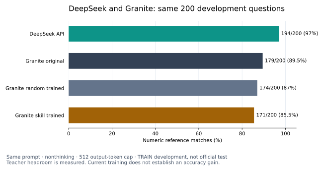
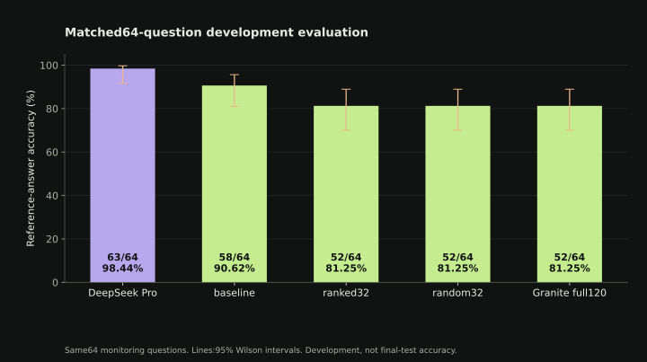
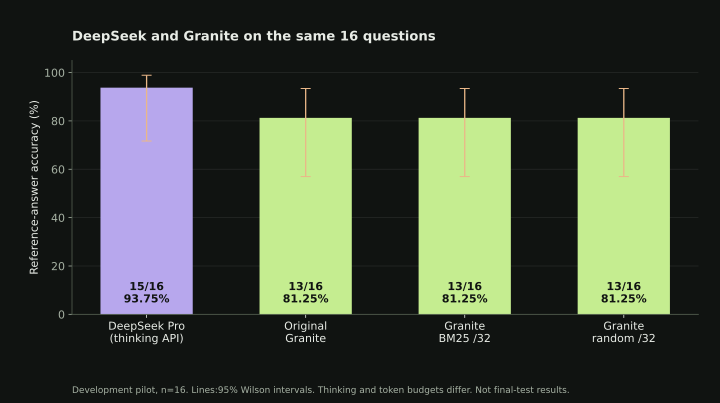
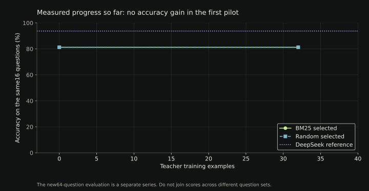

Granite weights and token efficiency
The pinned 3B checkpoint is downloaded and hash-verified. Explore actual tensor values, non Chinese and Chinese model comparisons, language-specific tokenizer probes, and a staged sparse upcycling plan.
Open the model and efficiency research page ↗Learning more
from less.
Can student aware data selection help Granite learn mathematical reasoning from DeepSeek more efficiently than random selection?
Working prototype. Accuracy gain not demonstrated.
Granite has been fine-tuned on Modal. The multi-source study has completed 12 reviewed primary arms; six larger reference plans remain deferred. The separate human-reference study now tracks untouched Granite, random data and skill selection on 200 new development questions.
Student: IBM Granite 4.2 3B. Training: LoRA adapters on Modal A100 GPUs.
Completed work and evidence
- Prepared GSM8K and generated teacher examples.
- Trained and evaluated two 32-example Granite adapters on Modal.
- Measured no accuracy gain in the first pilot.
Current work and failures
- Tracking the separate human-reference baseline, random and skill study.
- Reviewing completed comparisons and preserving deferred reference plans.
Not yet accomplished
- Demonstrated accuracy improvement.
- A frozen official-test comparison.
- Public model-serving API.
Exactly which datasets and models were used?
- GSM8K: processed from its canonical source.
- Alpaca: previously discussed, not used in this run.
DeepSeek97%. Original Granite89.5%.
On the same200 development questions with the same prompt, nonthinking mode and512-token output cap: DeepSeek194 correct; untouched Granite179; random-trained174; skill-trained171. The teacher gap is real in this development sample. Our current training has not improved Granite.

This controls output budget. Strongest-practical DeepSeek remains a separate target. These TRAIN development questions are excluded from teaching; the official test remains sealed. More data alone is not a guaranteed fix.
Cost context: Modal runs dedicated GPU training, data-ranking and evaluation jobs. DeepSeek charges for teacher API input/output tokens. Job reservations are planning allowances. Model efficiency needs a comparison on the same inference workload. Modal pricing · DeepSeek pricing
40 Hugging Face repositories sampled:312 complete training rows. Separately,1800 math prompts were expanded from three compatible sources. Samples are not full-corpus downloads.
Pinned source inventory and actual import status ↗ · Granite, Mistral and Llama distillation references ↗Untouched Granite, random data and skill selection
Loading the human-reference study snapshot. Pending runs have no assigned accuracy.
These 200 questions come from the GSM training split and were withheld from teaching. They are separate from the earlier 64-question monitoring set and are not the official final test.
| Model / selection | Last observed status | Numeric correct | Truncated | Actual tokens | Actual updates |
|---|
Paired comparisons are unavailable until both matching evaluations are complete.
Teacher solutions were generated by DeepSeek for human-authored GSM questions and checked against dataset answers. This is an exploratory seed 42 study. Equal supervised tokens do not equalize examples, runtime or total compute; numeric answer checks do not verify every reasoning step.
Structured human-study results ↗ · Full human-study report and paired uncertainty ↗
Current multi-source study: random, skill and gradient
Loading the current study snapshot. Earlier GSM-only results are separate history.
Waiting for the latest published run status…
Pending evaluations have no assigned accuracy.
Completed current-study scores will appear here.
| Budget | Seed | Selector | Numeric correct | Truncated | Actual tokens | Updates |
|---|
Budget coverage and remaining runs
Current-study paired results, uncertainty and selector overhead ↗ · Structured current-study results ↗
Initial GSM-only skill versus random study
DeepSeek versus Granite
On the same64 monitoring questions: DeepSeek63/64 and original Granite58/64. The older adapters scored52/64. These are development results.

DeepSeek uses thinking mode with a4096-token cap; Granite uses non-thinking mode with a512-token cap. These are different inference budgets. Official test results remain pending.
Early16-question pilot and learning history



Ranked versus random
| Model | Numeric matches | Strict format | Truncated | Training tokens | Mean seconds |
|---|
Limitations and interpretation
Larger64-question comparison, corrected/regressed answers and uncertainty ↗